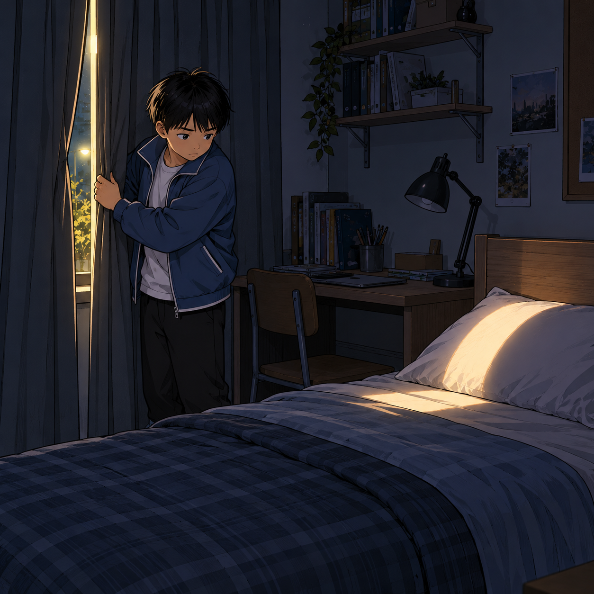
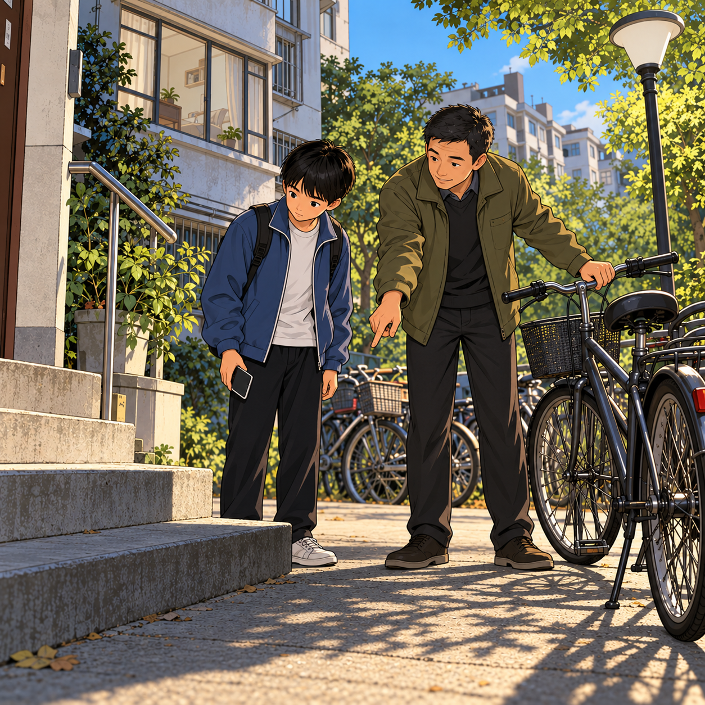
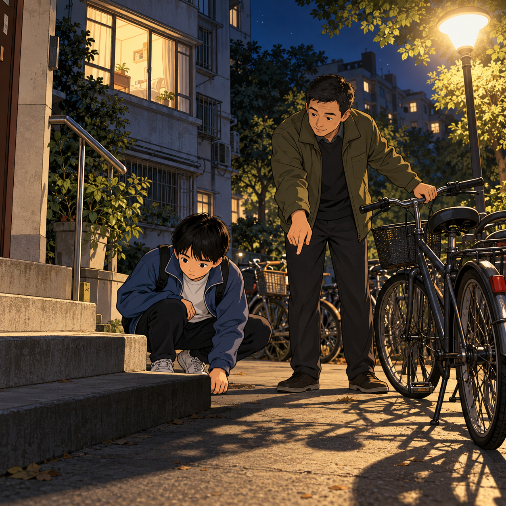
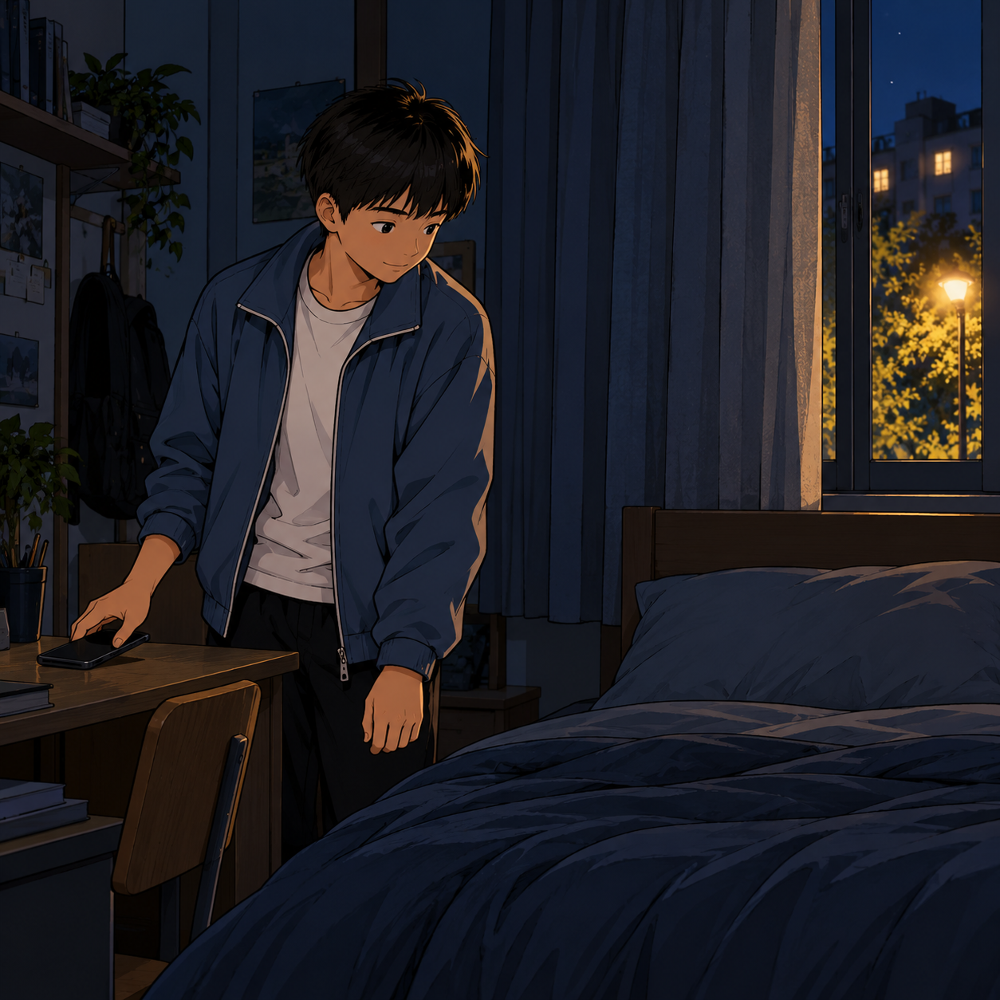
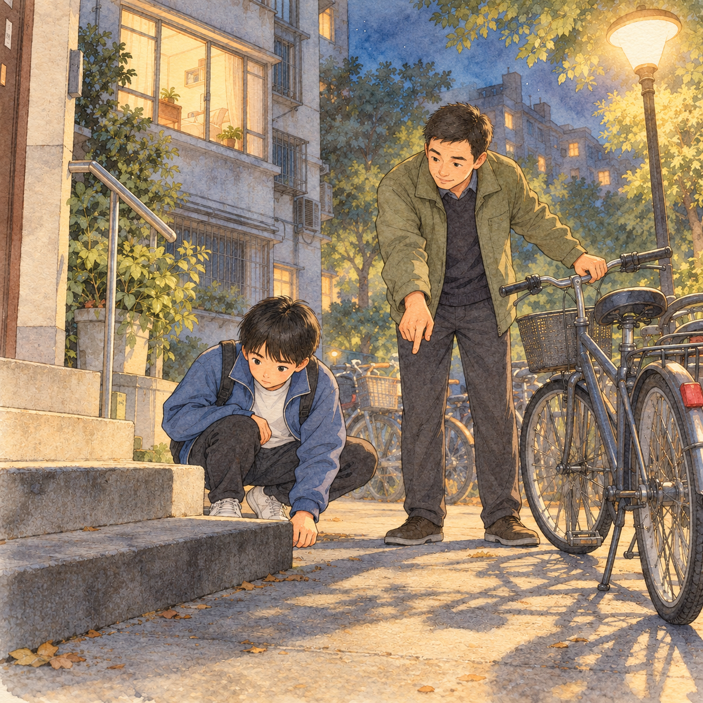
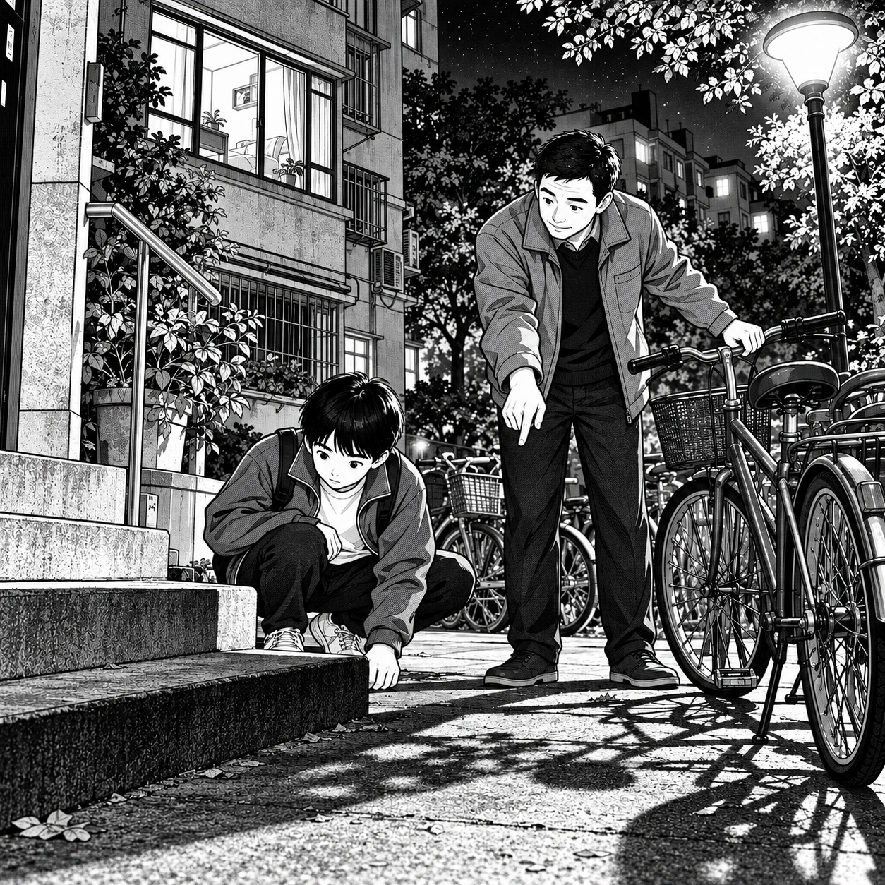
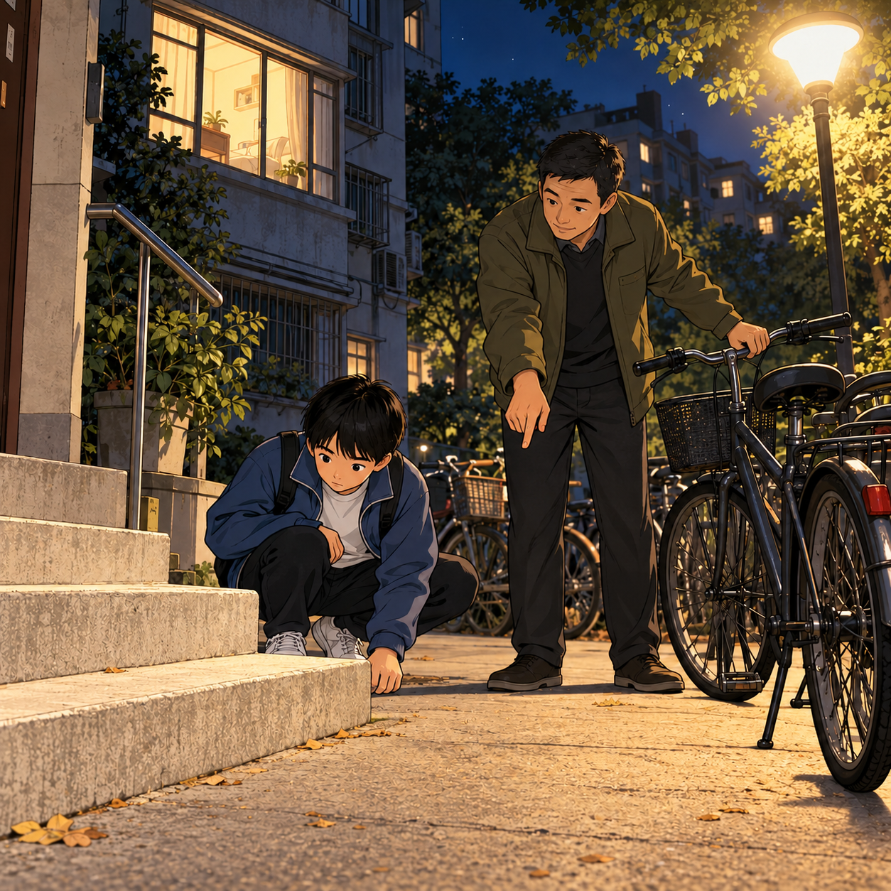

关灯这件事
教师虚构教学示例 AI 辅助配图
小说原文：阅读四段定稿 下载 Markdown 样例




旁白与对白属于漫画改编文字。它们与图片分别保存，便于继续编辑。
同一场景的风格对照


观察线条、色彩和明暗，用 2—3 个视觉词说明你的选择，并联系故事情绪给出理由。
教师模拟对照
原文依据：“我蹲下来，台阶边沿只剩一条模糊的线。”

哪一版更符合原文？你会保留哪些部分，又会修改哪里？
此对照为教师刻意构造，示范问题判断与修改说明，不代表真实学生作品或自然生成的迭代历史。图中窗户明亮不能单独证明光源，应结合小说核查。
作品说明示例
我把小说中人物想法的变化，放在拉窗帘、听邻居说明、蹲下看台阶和放下手机四个时刻里。发照片与等待回复的过程用简短文字连接。画面保留相同人物和衣着，用冷暖光线表现夜晚。结尾仍然留有一点光，并说明还要观察，让两种生活需要都得到回应。
本课材料展示一轮修改判断。模块最终的两轮修改和真实读者反馈将在后续课时积累。